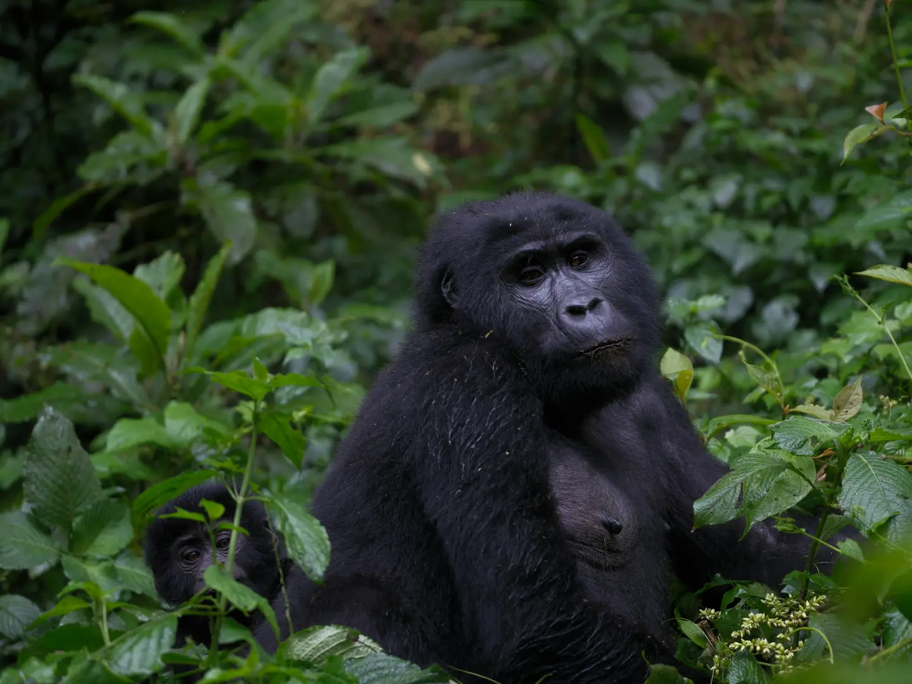

Permit-led dates
Trekking access is limited and tied to specific dates and locations. We check the intended route against current permit availability before presenting a final sequence.

Private Gorilla Safaris · Rwanda & Uganda
A considered gorilla journey begins before the trek: with the right permits, realistic pacing, suitable lodges and enough time for the forest to become more than a single encounter.
The trek is one hour.
The journey is much more.
Mountain-gorilla tracking is carefully regulated, physically variable and dependent on permits, park rules, weather and conditions on the day. The travel around it deserves the same level of attention as the encounter itself.
Rwanda offers an efficient approach to Volcanoes National Park through Kigali and a refined lodge landscape. Uganda can bring a different forest and highland character, with routes shaped around the selected park, border plan and wider itinerary. Combining both countries can create depth, but only when transfer time and recovery are treated honestly.
Resplendent coordinates the journey as one sequence: permits, selected accommodation, private transfers, border requirements, guiding, porter planning and supporting experiences.
Plan around what cannot be improvised
Trekking access is limited and tied to specific dates and locations. We check the intended route against current permit availability before presenting a final sequence.
Forest conditions and tracking time vary. The itinerary should protect the night before, leave room after the trek and match additional hikes or primate activities to the traveller.
A two-country journey needs realistic transfer times, correct travel documents and sensible international flights. The route is designed as a whole rather than as two trips joined together.
A two-country planning rhythm
Our Signature Journey offers a detailed eight-day framework. The sequence below shows the planning logic behind it.
Use the arrival to rest, review the route and protect the first mountain transfer from an unreliable same-day international connection.
Travel into Rwanda's northern highlands for the forest, with lodge location and supporting activities chosen around the trek rather than around a crowded checklist.
Cross privately into southwestern Uganda for another highland chapter, coordinating the border, accommodation and park access carefully.
Add golden monkeys, conservation context, living culture or a quiet final day only where it supports the traveller's energy and interests.
What we make explicit.
Your proposal will distinguish confirmed permits from requested arrangements and set out the operating partner, lodges, transfers, inclusions, exclusions, payment schedule and cancellation conditions. Current entry documents, park rules, minimum-age requirements and traveller suitability are checked for the final dates.
Gorilla sightings are never presented as a manufactured attraction or guaranteed performance. The value lies in entering a protected landscape under the guidance of the park team and understanding the conservation structure that makes the encounter possible.
Porter support, walking equipment, dietary needs, mobility considerations and luggage planning should be discussed before travel. These practical details can change how composed the trekking day feels.
View the Full Across the Virungas ItineraryPlanning questions
The right answer depends on available time, flight routing, appetite for road travel, preferred lodge style and whether one encounter or a deeper two-country story is the goal.
Yes. Kigali, another Rwandan landscape, Uganda or a wider East African journey can be added when the connection remains coherent and current travel requirements support it.
Permits secure access for the booked date, subject to park rules and conditions. Wildlife location, terrain, weather and operational decisions remain outside any travel company's control.